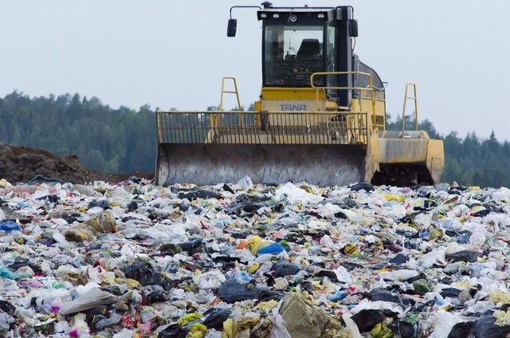

How expectations change our perception of reality
Universal human unconsciousness about the pollution of nature.
“If you can’t quite tell what something is, but from your prior experience you have some expectation of what it ought to be, then you will use that information to guide your judgment. We do this all the time,” explained Jazayeri.
Respect and protect green spaces
Green spaces, such as parks and gardens, are important. They absorb carbon dioxide and are associated with lower levels of air pollution.
Make your voice heard by those in power
Tell your Member of Parliament, local councillors and city mayors that you think action on climate change is important.

Cut consumption and waste
Be mindful of your consumption: try not to buy more than you need, and embrace the value of your current belongings.